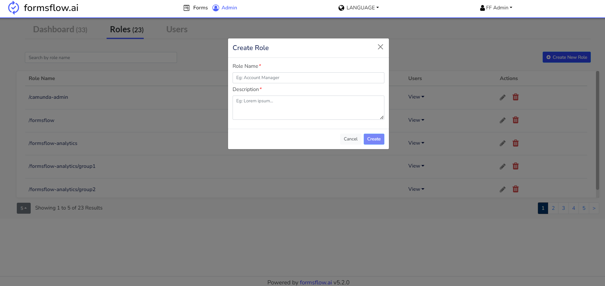
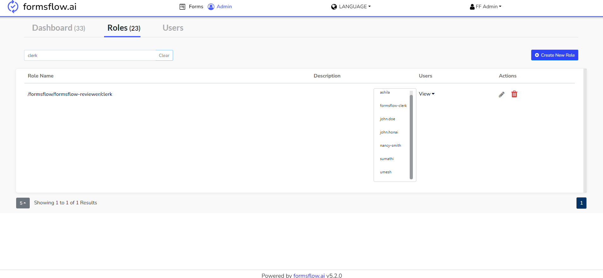
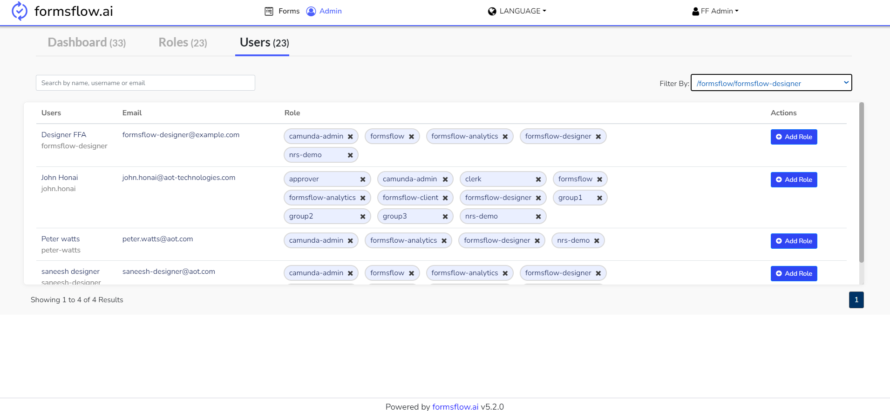

<article class="docs-article">
    <section class="docs-section" id="version">
        <h1 id="admin_module">
            Admin Module
        </h1>
        <hr>
        <p>
            The admin module comprises features that are accessible to users with administrative privileges. Presently, the admin
            module encompasses dashboard management, role management, and user management. From the Admin module, it is possible to
            create roles and manage user roles.
        </p>
        <br>
        <h3>
            Dashboard Management
        </h3>
        <p>
            In the Dashboard Tab, it is possible to assign the user groups that have access to a specific dashboard. 
            
        </p>
        <br>
        <h3>
            Role Management
        </h3>
        <p>
            New group/roles can be created by clicking the Create Role button.
            
        </p>
        <br>
        <p>
            The View option for each role displays all the users who are assigned with the particular role.
            
        </p>
        <h3>
            User Management
        </h3>
        <p>
            User creation can only be done using the Keycloak admin console. Once users are created, new roles or groups can be
            assigned to them from the Users tab. Additionally, if needed, the added roles can also be removed.
            
        </p>
    </section>
</article>